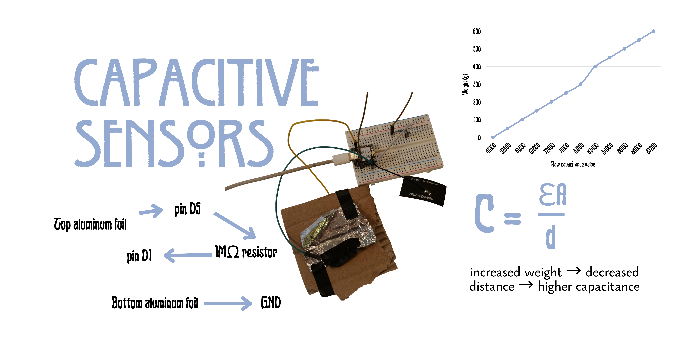
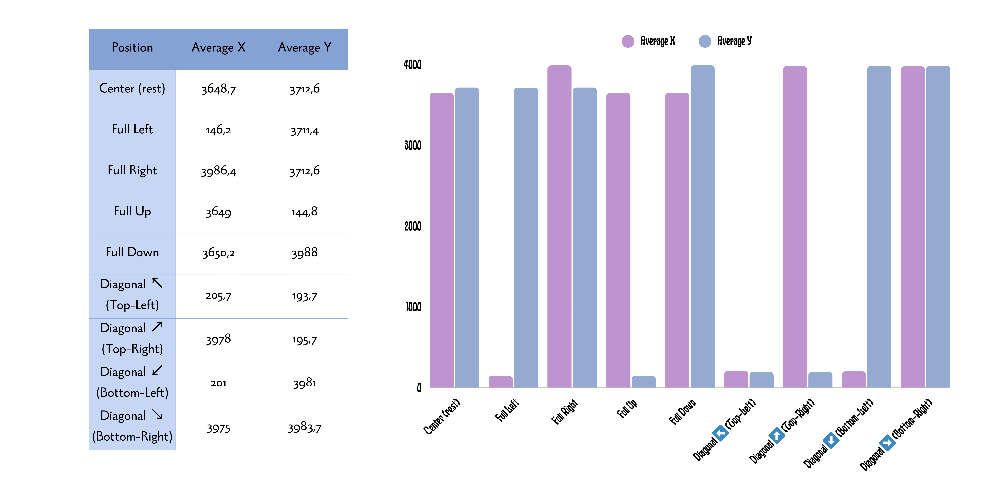

Week 6: Electronic Inputs
Assignment 1: Capacitive Sensor

Since I missed the class, I had to work on my capacitive sensor alone. I decided to make a very simple force measurer that would allow me to play a simple jumper game .
Since I had already left campus, my materials were limited, but I used isolation tape and aluminum foil to create a simple touchpad. The physical quantity measured was weight, but I was mainly interested in how it would function as a binary sensor (touching / not touching).
#include
#include
const int SEND_PIN = D1;
const int TOUCH_PIN = D5;
const int TOUCH_THRESHOLD = 50;
const char* WIFI_NAME = "DinoGame";
const char* WIFI_PASS = "playdino";
AsyncWebServer server(80);
AsyncWebSocket ws("/ws");
const char page[] PROGMEM = R"rawliteral(
Dino
)rawliteral";
unsigned long readTouch() {
pinMode(TOUCH_PIN, OUTPUT);
digitalWrite(TOUCH_PIN, LOW);
delayMicroseconds(500);
pinMode(TOUCH_PIN, INPUT);
digitalWrite(SEND_PIN, HIGH);
unsigned long start = micros();
while (
digitalRead(TOUCH_PIN) == LOW &&
micros() - start < 3000
) {}
digitalWrite(SEND_PIN, LOW);
return micros() - start;
}
void setup() {
Serial.begin(115200);
pinMode(SEND_PIN, OUTPUT);
digitalWrite(SEND_PIN, LOW);
WiFi.softAP(WIFI_NAME, WIFI_PASS);
Serial.println(WiFi.softAPIP());
server.addHandler(&ws);
server.on("/", HTTP_GET, [](AsyncWebServerRequest *req) {
req->send_P(200, "text/html", page);
});
server.begin();
}
bool touching = false;
unsigned long lastRead = 0;
void loop() {
if (millis() - lastRead < 20) return;
lastRead = millis();
ws.cleanupClients();
unsigned long value = readTouch();
bool pressed = value > TOUCH_THRESHOLD;
if (pressed && !touching) {
ws.textAll("jump");
}
touching = pressed;
}
Assignment 2: Use + Calibrate Another Sensor
Excited by the previous game, I wanted to try something more ambitious, especially in terms of combining multiple sensors.
I decided to create controls for another game. I was particularly excited when I found the heartbeat sensor and the joystick sensor .
My idea was to tweak a classic arcade shooter game by incorporating the player's heartbeat into gameplay. Unfortunately, the heartbeat sensor was extremely inaccurate, but the game was still silly and fun to play.
Both games for this assignment were made with the help of LLMs, and I think many of the calibration issues came from that. From calibration testing, a full joystick rotation reached approximately 145–992 on each axis.

#include
#include
#include
const char* ssid = "this is my wifi";
const char* pass = "this is my wifi password";
const int JOY_X = A0;
const int JOY_Y = A1;
const int JOY_BTN = D2;
const int HEART = D6;
WebSocketsServer ws(81);
volatile unsigned long lastBeat = 0;
volatile unsigned long beatGap = 0;
void IRAM_ATTR beatDetected() {
unsigned long now = millis();
unsigned long diff = now - lastBeat;
if (diff > 250) {
beatGap = diff;
lastBeat = now;
}
}
int getBPM() {
if (!beatGap) return 0;
if (millis() - lastBeat > 3000) return 0;
return constrain(60000 / beatGap, 30, 220);
}
void connectWifi() {
WiFi.mode(WIFI_STA);
WiFi.begin(ssid, pass);
Serial.print("connecting");
while (WiFi.status() != WL_CONNECTED) {
delay(400);
Serial.print(".");
}
Serial.println();
Serial.println(WiFi.localIP());
}
void wsEvent(uint8_t client, WStype_t type, uint8_t*, size_t) {
if (type == WStype_CONNECTED) {
Serial.printf("client %u connected\n", client);
}
if (type == WStype_DISCONNECTED) {
Serial.printf("client %u disconnected\n", client);
}
}
void setup() {
Serial.begin(115200);
pinMode(JOY_BTN, INPUT_PULLUP);
pinMode(HEART, INPUT);
attachInterrupt(
digitalPinToInterrupt(HEART),
beatDetected,
RISING
);
analogReadResolution(12);
analogSetAttenuation(ADC_11db);
connectWifi();
ws.begin();
ws.onEvent(wsEvent);
}
unsigned long lastSend = 0;
void loop() {
if (WiFi.status() != WL_CONNECTED) {
connectWifi();
}
ws.loop();
if (millis() - lastSend < 16) return;
lastSend = millis();
if (!ws.connectedClients()) return;
StaticJsonDocument<128> data;
data["x"] = analogRead(JOY_X);
data["y"] = analogRead(JOY_Y);
data["btn"] = !digitalRead(JOY_BTN);
data["bpm"] = getBPM();
char json[128];
int len = serializeJson(data, json);
ws.broadcastTXT(json, len);
Serial.printf(
"X:%d Y:%d BTN:%d BPM:%d\n",
(int)data["x"],
(int)data["y"],
(int)data["btn"],
(int)data["bpm"]
);
}